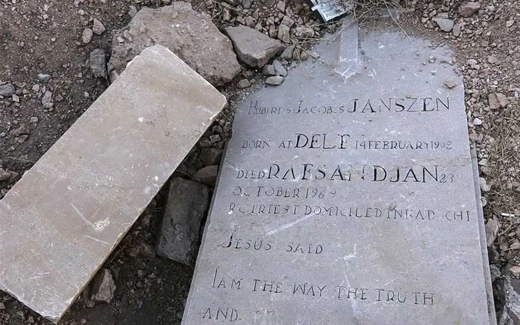

یکی از نمادهای دوران استعمار انگلستان در ایران «قبرستان متجاوزین انگلیسی» در محله بهمنی بوشهر است. این قبرستان با گنجاندن اجساد ۳۵ افسر و سرباز ارتش انگلیس، شاهد تلاش و شجاعت مردم بوشهر در مقابل تجاوزهای گذشتگان بوده است. تصاویر قدیمی این قبرستان، صلیبهای بزرگی روی مقبرهها را نشان میدهند که امروزه از آنها هیچ اثری باقی نمانده است. آدرس: بوشهر، میدان رفاه، بلوار ماهینی
